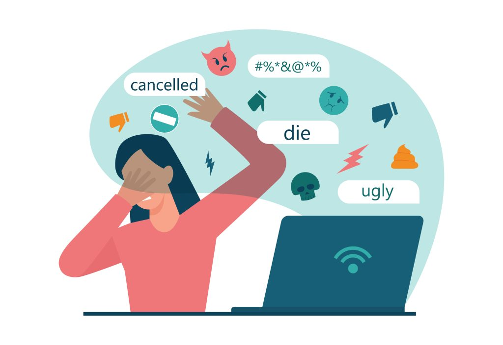
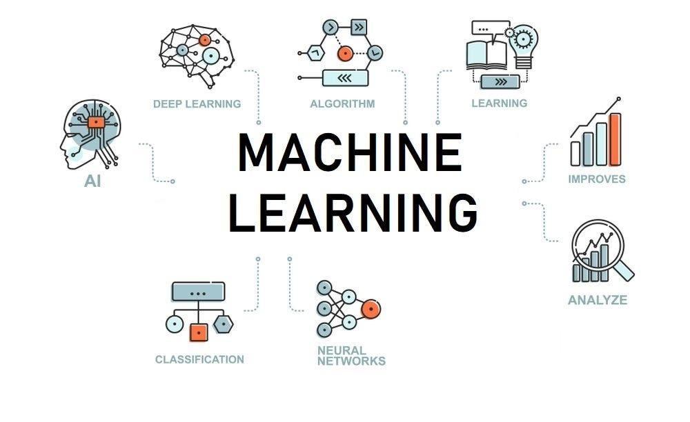

Cyberbullying Detection
Detecting harassment and harmful language in online communities using content and context signals.
PhD Student · University at Albany, SUNY
Researching early toxicity forecasting, cyberbullying detection, and interpretable AI for proactive online safety.
I am a PhD student in Computer Science at the University at Albany, SUNY, working with the Albany Lab for Privacy and Security (ALPS) under the supervision of Dr. Pradeep K. Atrey. My research focuses on forecasting toxicity escalation in online conversations, with the goal of building early-warning systems that support safer social media environments.
Unlike traditional moderation systems that detect harmful content only after it appears, my work studies how toxic situations develop over time. By combining textual cues with temporal and structural signals, I aim to design interpretable models that can predict harmful conversation trajectories before they fully unfold.
My long-term goal is to contribute to proactive trust-and-safety technologies that enable earlier intervention against cyberbullying, harassment, and coordinated online harm.

Detecting harassment and harmful language in online communities using content and context signals.

Developing ML models that support moderation decisions and reduce harm at scale.

Exploring AI-driven approaches for understanding online behavior, harmful speech patterns, and proactive safety systems.

Designing early-warning tools and decision support for safer social platforms.
Studying how communities behave under toxicity and what interventions work best.
Modeling conversation trajectories and social signals to forecast escalation risk early.
For more details, please see my dedicated pages: Experience, Projects, and Publications.
Feel free to reach out for collaboration, research discussions, or project opportunities.
📧 Email: iakter@albany.edu
🔗 LinkedIn: linkedin.com/in/irien-akter